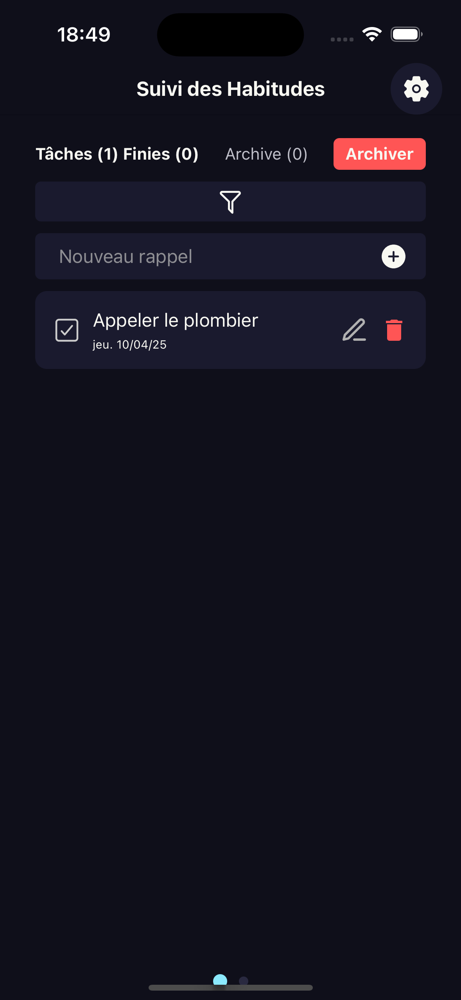
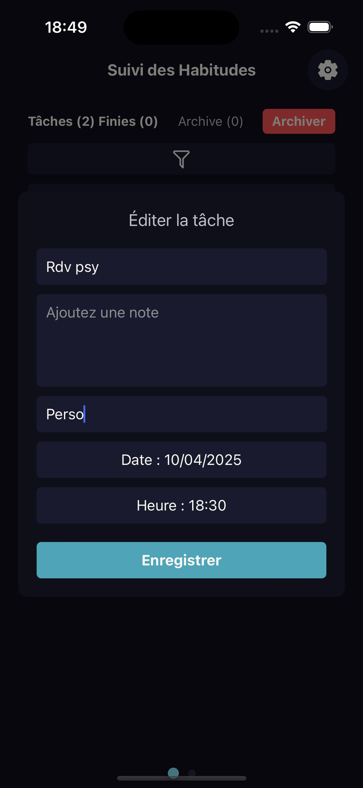
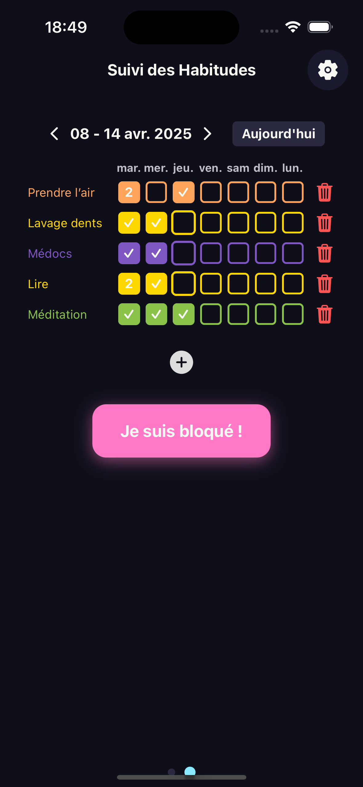
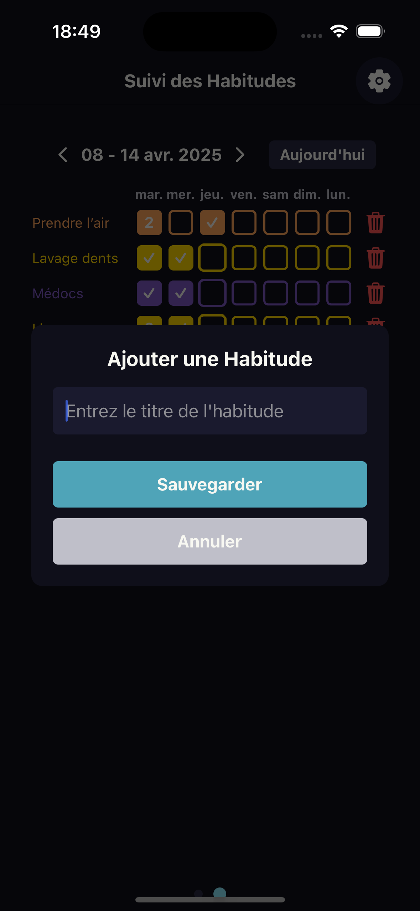
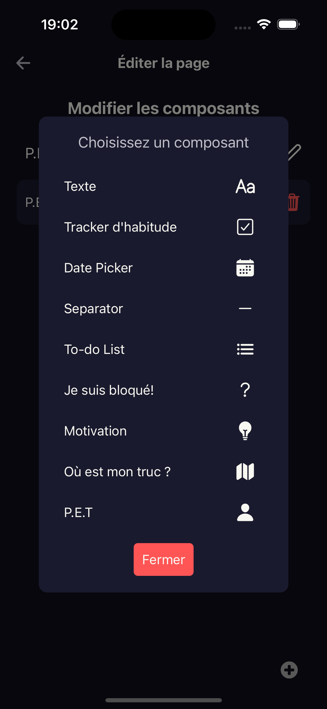

Créez vos To-Do pour capturer vos idées et vos priorités. Filtrez-les facilement pour vous concentrer sur ce qui est essentiel aujourd'hui.
Ajoutez une tâche en quelques secondes. Donnez-lui une catégorie pour mieux vous organiser, puis utilisez les filtres pour rester focus.
Suivez les actions qui comptent pour vous au quotidien. Visualisez vos réussites et faites grandir vos habitudes pas à pas.
Créez une habitude avec un nom et une couleur personnalisée. Chaque petite habitude est une victoire sur le long terme.
Cochez chaque jour ce que vous avez accompli. Un simple geste pour entretenir votre élan.
Ajoutez des pages personnalisées pour stocker vos projets, idées ou routines. Votre organisation, à votre image.
Voici tous les composants que vous pouvez ajouter à vos pages :
